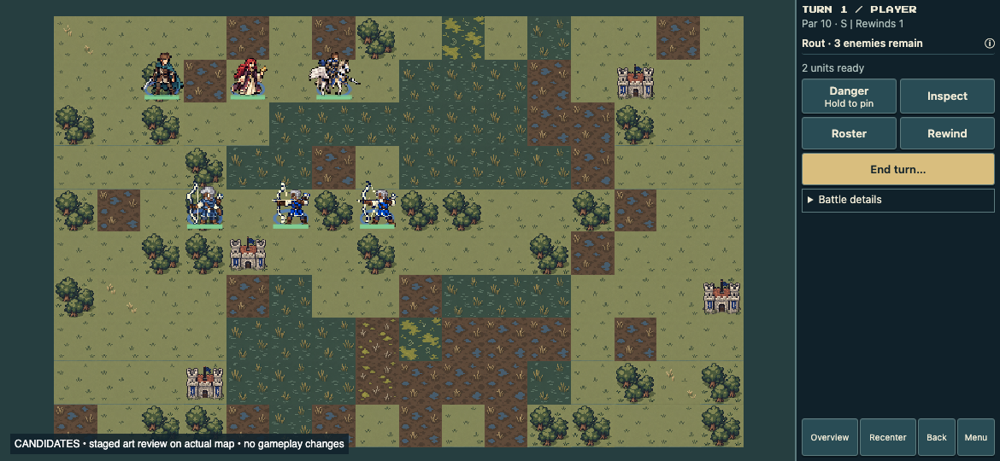
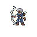
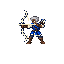
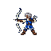

Three treatments of the same veteran archer. A changes the palette; B also changes proportions and readiness; C explores a compact drawn-bow pose. These are exploratory generations, not perfectly controlled pixel edits.
Top: unchanged Edric, Sera and Pegasus anchors. Lower row, left to right: A muted, B ready attempt, C drawn bow. These are staged art probes in the actual game renderer; no gameplay assets were replaced.

Compare weapon recognition, body proportions and separation from terrain. Captures use the same positions and current class sizing. Grayscale tests value separation; black silhouettes test pose and equipment shape.
Result: A achieves the muted palette. B and C converged on similar aiming poses and retained brighter blue than requested; the smaller-head direction was only partly achieved. They are useful pose samples, not three cleanly separated styles.

Compact proportions with restrained steel-blue cloth.
Generated source
Requested a ready stance; output drifted into aiming.
Generated source
Bow drawn, stronger arm angles and forward intent.
Generated sourceGenerated with built-in imagegen. Coarse-pixel prompting is an experiment, not a guarantee of a mathematically uniform native pixel grid. Existing runtime nearest-neighbor sizing is retained. No claim of acted-state verification.
{kind=link}
{kind=link}
{kind=link}